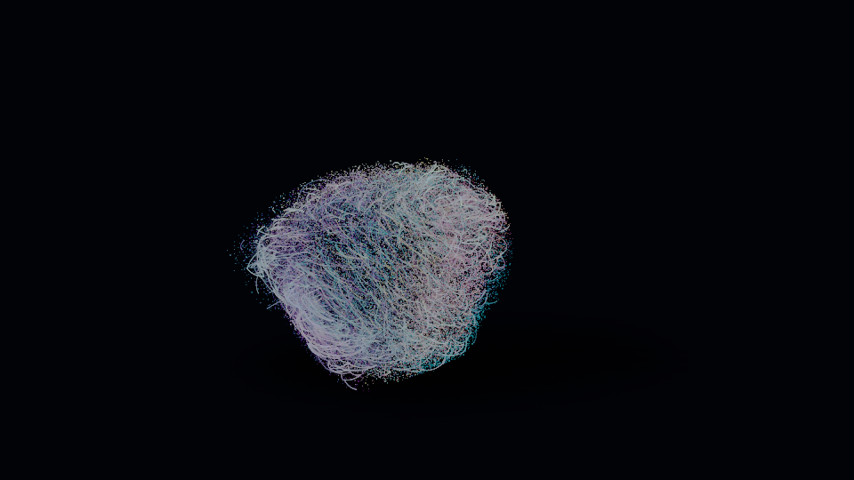
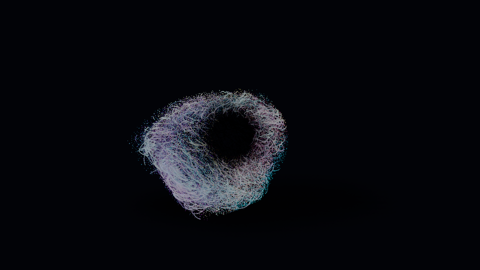

Apri Prisma · ParticelleGlitch e particelle
Glitch incrociato e flash
In Filtri → Glitch → Struttura scegli Incrocio. Le due serie di bande hanno spostamenti e impulsi indipendenti. Regola l’intensità verticale, la larghezza delle colonne e la variazione della direzione. Direzione 0 mantiene gli assi orizzontale e verticale.
In Ritmo degli impulsi, attiva Impulsi brevi in millisecondi: da 5 a 500 ms. Il video qui sopra usa 50 ms. A 30 fps un fotogramma dura circa 33 ms: un impulso più breve può cadere fra due fotogrammi.
Allungare il video senza rallentarlo
In Movimento → Tempo, Mantieni velocità quando cambi durata conserva la cadenza di forma, particelle, colori, luci e filtri. Passando da 10 a 20 secondi, il movimento prosegue per due cicli. La durata può anche interrompere un ciclo: il pannello segnala quando la chiusura non coincide. Disattiva l’opzione per adattare il movimento all’intero video.
Nucleo scuro: stesso preset, stessi materiali

Prima: controllo non applicato alle particelle.
Dopo: oscurità 1, estensione 0,76.Colori → Nucleo scuro agisce anche su granelli e fili, conservando palette e pellicola. È un oscuramento della materia vicino all’asse della forma; non aggiunge un solido al centro. Anche Strati di colore è disponibile in Particelle.
Distribuzione e perimetro
Forma → Granelli separa dispersione interna e distanza fra gruppi. Sono controlli di distribuzione, senza collisioni fra i singoli granelli. Diametro granelli e nodi fino a 128 px a 1080p; fili connessi fino a 32 px e scie fino a 64 px.
In Movimento → Campi e tracciati, scegli un percorso chiuso e premi Contieni tutte: coinvolge il 100% delle particelle e mantiene la geometria dentro il perimetro proiettato, anche in profondità. Evita resta la repulsione dal tubo attorno alla curva. Bagliori e filtri finali possono estendere l’immagine oltre la geometria.
Apri i controlliImmagini e video generati con Prisma. Il confronto del nucleo usa lo stesso stato e la stessa posa; il video del glitch è un esempio distinto.